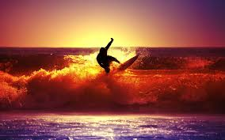
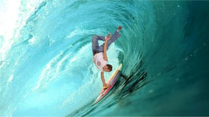

Surfing
About :
Surfing is a surface water sport
in which the wave rider, referred to as a
surfer, rides on the forward or deep
face of a moving wave, which is
usually carrying the surfer towards the shore.

History
For centuries, surfing was a central part of ancient Polynesian culture. Surfing may have first been observed by Europeans at Tahiti in 1767 by Samuel Wallis and the crew members of the Dolphin who were the first Europeans to visit the island in June of that year. Another candidate is the botanist Joseph Bank being part of the first voyage of James Cook on the HMS Endeavour, who arrived on Tahiti on 10 April 1769. Lieutenant James King was the first person to write about the art of surfing on Hawaii when he was completing the journals of Captain James Cook upon Cook's death in 1779.
Surf Waves
Swell is generated when wind blows consistently over a large area of open water, called the wind's fetch. The size of a swell is determined by the strength of the wind and the length of its fetch and duration. Because of this, surf tends to be larger and more prevalent on coastlines exposed to large expanses of ocean traversed by intense low pressure systems.
Surfers
Surfers represent a diverse culture based on riding the waves. Some people practice surfing as a recreational activity while others make it the central focus of their lives. Within the United States, surfing culture is most dominant in Hawaii and California because these two states offer the best surfing conditions.